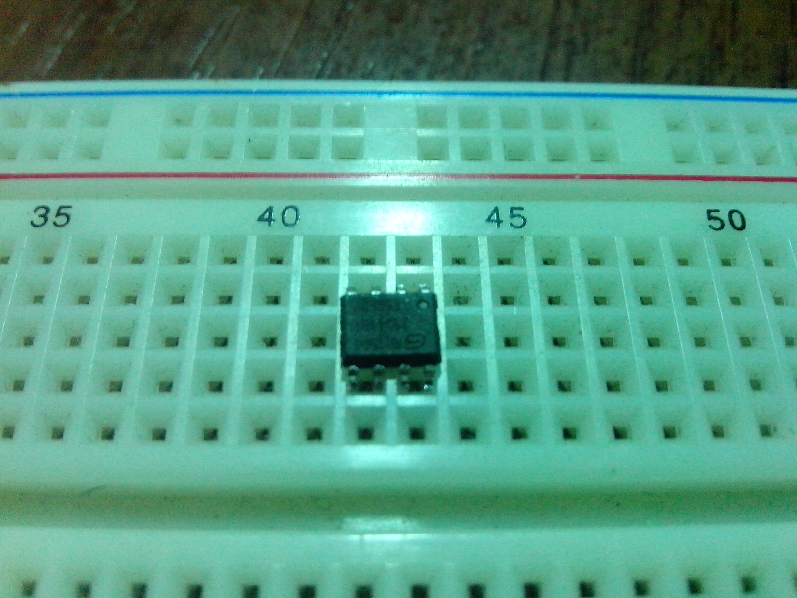
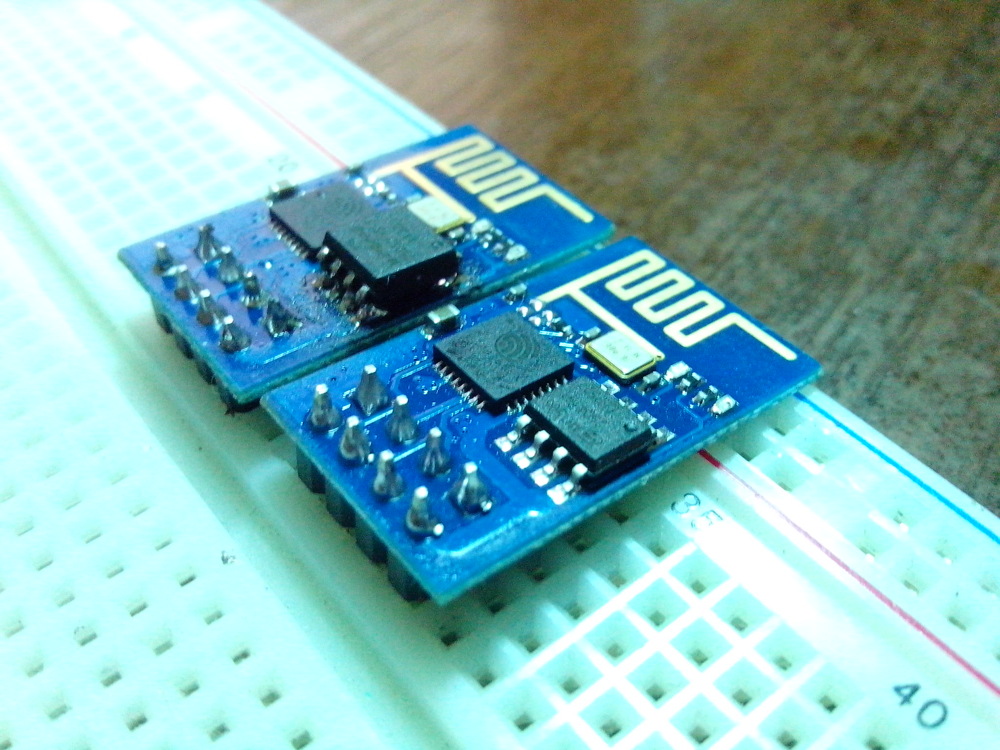

Увеличение памяти на ESP8266 ESP-01
Сегодня речь будет идти о том, как увеличить количество памяти на модуле ESP8266 ESP-01, путём замены чипа на новый.
На IRC канале проекта wifi-iot.com, Макс - разработчик прошивки для ESP модулей, предложил идею что есть возможность заменить стандартный чип на более емкий. Для замены был выбран новый, от производителя: «Winbond Electronics Corporation (WINBOND)» чип: «W25Q32FVSSIG» имеющий у себя на борту 4МБ памяти. Мной был куплен примерно за 1$. На всякий случай брал два, немного сомневаясь в том что смогу без последствий перепаять не повредив оный. Да и подстраховка никогда не лишняя :-)
Сразу хочу попросить прощение за качество фото. На телефон к сожалению, не получилось сделать более-менее нормальных фото. Нужно будет попрактиковать со светом и фоном.
Вооружившись паяльником и плоскогубцами(об этом ниже) я начал экзекуцию над несчастным модулем :-)
После пары минут дефолтный чип был у меня в руках.

При покупке в магазине, посмотрев на чип я не заметил отличий от дефолтного. И уже придя домой и сравнив их, понял что новый чуть больше.
Потыкав его и так и сяк, я понял что дела не будет. Так как у меня по жизни «или сломаю или сделаю» :-) , я взял в руки плоскогубцы и просто подогнул ножки на новом чипе, для того что бы они чётко попали на контактные площадки на плате модуля. После 10-ти минутных манипуляций с паяльником, всё никак не мог установить его как нужно, новый чип всё-таки встал на положенное ему место. Проверив через лупу пропайку, я обрадовался от того что наконец-то победил эту заразу :-)
Чип был перепаян. Я сразу же прошил его прошивкой от Макса - wifi-iot.com, и протестировал его работу. Абсолютно никаких проблем не было обнаружено. И благодаря этой манипуляции с чипами, я смог установить больше компонентов в конструкторе прошивки.
P.S. Под конец могу сказать что был очень доволен полученным результатом.
По ходу статьи, я не раз упоминал про какого-то Макса и какую-то его прошивку. На сайт wifi-iot.com я натолкнулся совсем случайно, и очень рад что нашёл его. Благодаря нему мой проект «Умного дома» обрел новые возможности. Так же хочу сказать спасибо ребятам с IRC канала, за ответы на глупые вопросы и рекомендации в той или иной ситуации! В случае если Вы хотите построить свой «Умный дом» или же какие либо IoT на базе подобных модулей, то прошивка от Макса будет самым отличным подспорьем для этого. Рекомендую!
P.P.S. Немного фото на самый конец. Сравнение модулей с дефолтным чипом, и с новым.
